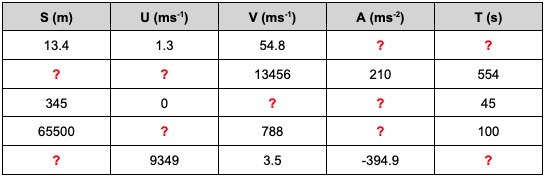

Functions and Modules#
As we established last week, one of the main reasons that we use programming languages is to make our workflow more efficient. We use functions and modules to do just this - they are used to save us time by eliminating the need to write the same bits of code over and over again.
Naming Conventions#
Now that we are comfortable defining variables, we should briefly consider variable names. From the assigned variable name it should be clear what the variable represents, for example, if I set a variable equal to the age of my car, a good name could be “carAge”, whereas a less useful name might be “ca”.
In the example above I used camel case for my variable name and this is a good style convention to adopt. When using camel case the first word of the variable is lowercase, and rather than using spaces, we highlight the start of a new word using a capital letter e.g. thisIsAnExampleOfHowWeCanUseCamalCase. Alternatively, we may wish to use snake case: this_is_where_we_use_underscores. Typically when using snake case all letters are lowercase.
Be aware that Python is case sensitive - “variable1” is not the same as “Variable1”. Variable names must always start with a letter.
In this document, I will use snake case when defining the names of functions.
Functions#
A function is a block of code which can be called from anywhere in your program. Function use is particularly powerful as It allows you to reuse code (saving you time and reducing the chances of errors) and they make code cleaner and easier to adapt and debug.
We have actually used functions lots of times previously, the print() command is a function, all the methods we have used are actually functions. What we are going to do now is build our own functions.
To start with we are going to look at the anatomy of a function.
#Here is an example of a simple function to calculate the length of the hypotenuse of a triangle.
import numpy as np
def hypotenuse_calculator(a,b):
c = np.sqrt(a**2 + b**2)
return c
Let’s take a look at the different elements of the function above:
We begin our function with the “def” command. This tells the computer that we are about to define a new function.
Next we see the name of our function “HypotenuseCalculator” - this is what we will call in our script when we want to use it
Following our functionname we have “(a,b)” which defines the arguments that we can input into our function. We end our first line with a “:”. Note: a function does not need arguments, but often they are useful.
“c = np.sqrt(a2 + b2)” is the bit of code that defines what our function does. Note that this is indented.
Finally we have our “return c” statement. This ends the function and gives us the variable(s) that we would like to extract from the function. Note: a function does not always return information.
If we wanted to call our function in our script, we can now just type the following:
# We are saved from having to type out the calculation each time we want
# to determine the hypotenuse of a triangle with different dimensions!
h1 = hypotenuse_calculator(2,2)
print(h1)
h2 = hypotenuse_calculator(2,5)
print(h2)
h3 = hypotenuse_calculator(11,73.2)
print(h3)
2.8284271247461903
5.385164807134504
74.02188865464053
The example provided above is a very simple function that returns a single value, but there is nothing to stop us writing a more complex function that returns many variables. For example:
def right_angled_triangle(base,height):
hypotenuse = np.sqrt(base**2 + height**2)
print("The hypotenuse has a length of ", hypotenuse, "units. \n")
area = 0.5 * base * height
print("The area of the triangle is ", area, "units**2. \n")
perimeter = base + height + hypotenuse
print("The perimeter of the triangle is ", perimeter, "units. \n")
theta = np.arcsin(height/hypotenuse)
print("Theta is", theta, "radians. \n")
ratio = area / perimeter
print("The surface area to perimeter ratio of the triangle is: ", ratio, ".")
return hypotenuse, area, perimeter, theta, ratio
# "\n" just tells the computer to start a new line (makes it easier to read output)
hypotenuse,area, perimeter, theta, ratio = right_angled_triangle(9,15)
The hypotenuse has a length of 17.4928556845359 units.
The area of the triangle is 67.5 units**2.
The perimeter of the triangle is 41.4928556845359 units.
Theta is 1.0303768265243125 radians.
The surface area to perimeter ratio of the triangle is: 1.6267860788660249 .
As mentioned above, we don’t necessarily need arguments for our function to be useful:
def say_hello_world():
print("Hello World")
say_hello_world()
Hello World
Modules#
A module is simply a file containing a set of functions that you may call into your script. The advantage of using a module is that, similarly to how using a function means that we do not have to rewrite the same formulae over and over again in our script, we no longer need to keep defining the functions that we use commonly in each script we write - we can simply import them from a premade module.
Creating and using a simple module is very easy. The first thing we must do is write a script containing the functions that we may need to call.
As we are going to create and import the module into this notebook, for simplcity the functions are not defined in here (this would defeat the purpose of the exercise - see area.py for functions that are defined.)
Now that we have defined all of the functions within our module, we must save it with an appropriate name and within the same directory (folder) as the script that we are going to import the module into.
The module above will be saved and named “area.py”. It is key that the “.py” is used as the file extension so that the computer knows to read it as a Python file.
import area
import numpy as np
# Now if we want to determine the area of one of the shapes for
# which we have an area function, we simply use the module.
areaCircle = area.circle(5)
areaCircle = area.circle(6)
areaSquare = area.square(8)
areaRectangle = area.rectangle(10,6)
areaTriangle = area.triangle(5,7)
areaTriangle = area.triangle(3.4,7.5)
The area of a circle with a radius of 5 units is: 78.53981633974483 units**2
The area of a circle with a radius of 6 units is: 113.09733552923255 units**2
The area of a square with length of 8 units is: 64 units**2
The area of a rectangle with length of 10 units and a width of 6 units is: 60 units**2
The area of a triangle with height of 7 units and a base of 5 units is: 17.5 units**2
The area of a triangle with height of 7.5 units and a base of 3.4 units is: 12.75 units**2
Lets compare that to the amount of code we would have needed to write in this single script if we had not used the module:
def circle(radius):
area = np.pi * radius**2
print("The area of a circle with a radius of ", radius, "units is: ", area, "units**2")
return area
def square(length):
area = length**2
print("The area of a square with length of ", length, "units is: ", area, "units**2")
return area
def triangle(base, height):
area = 0.5 * base * height
print("The area of a triangle with height of ", height, "units and a base of ", base, "units is: ", area, "units**2")
return area
def rectangle(length,width):
area = length * width
print("The area of a rectangle with length of ", length, "units and a width of ", width, "units is: ", area, "units**2")
return area
areaCircle1 = circle(5)
areaCircle2 = circle(6)
areaSquare1 = square(8)
areaRectangle1 = rectangle(10,6)
areaTriangle1 = triangle(5,7)
# ...and we would need to add these definitions to every script we calculated an area in...
The area of a circle with a radius of 5 units is: 78.53981633974483 units**2
The area of a circle with a radius of 6 units is: 113.09733552923255 units**2
The area of a square with length of 8 units is: 64 units**2
The area of a rectangle with length of 10 units and a width of 6 units is: 60 units**2
The area of a triangle with height of 7 units and a base of 5 units is: 17.5 units**2
As you become more well versed in coding and start to perform the same tasks over and over again, the advantage of writing well defined functions and using them in modules will become clear, particularly as the tasks you wish to complete become more complex.
Activities#
SUVAT Project
You will hopefully remember from your mechanics lecture this week that the SUVAT equations are essentially a subset of the kinematic equations and those that may be used when the acceleration of an object in motion is constant.
The two equations that were derived in the lecture were:
and
For simplicity when assigning variable names, we will also re-write these equations in the SUVAT notation you are likely familiar with:
and
where s = displacement, u = initial velocity, v = final velocity, a = acceleration and t = time. From these two equations, we can derive additional expressions that allow us to calculate two unknown variables provided that we know the values of the other three:
and
Functions#
Using the information above, write a series of functions that calculate the values of two unknown SUVAT variables when the values of the three other variables are known. Hint: start by considering how many unique combinations of three sub values of SUVAT there are.
Each function should contain a print statement that outputs the calculated values. For example:
def function_one(s,u,v):
calculation
print("The value of a is ", a, "ms^-2 and the value of t is ", t, "s")
return a,t
Modules#
Using the functions that you have defined above, create a SUVAT module that may be called into any script to allow you to quickly solve SUVAT equations. When creating your module you will want to create a “.py” file. To do this in CoCalc go to your directory and select the “new” button within the tool bar, then type the name of your module into the text field and select the Python extension from the drop down menu to the right of the text field.
Call your module into the Jupyter Notebook named “ModuleTest” and use it to find the unknown values for the following combinations of SUVAT:

Congratulations! You have completed your first Python project!
# Define SUVAT functions...